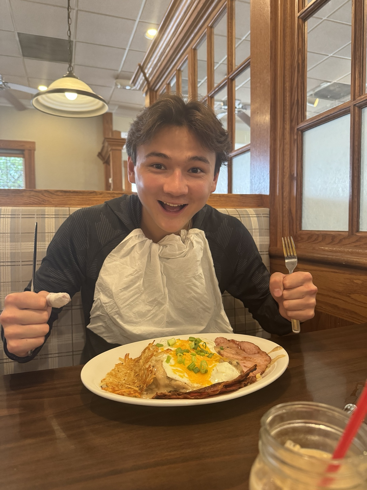
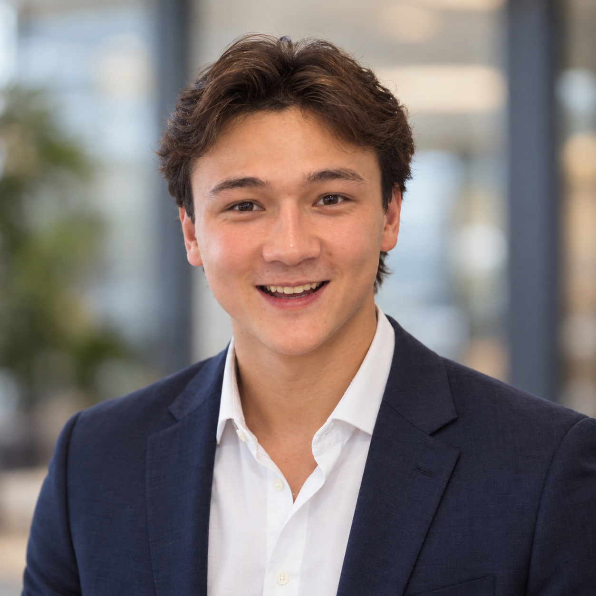

Make 2 — Digital Humanities Selfie


Reflection
Where do you see yourself in the image — and where do you not?
In these images, you can definitely see that it is still me, or at least based on me. However, there is still something uncanny about the photos; it doesn’t feel human. At first glance, it looks like it might be a real photo, but the more you look at it, the faker it seems to appear. When I look at it closely, it almost looks like it’s multiple photos of me put into one. There seems to be something off with my eyes as well as the texture of my skin. One thing I notice is that when I cover the upper half of my face with my hand, the remaining lower part of my face looks almost unrecognizable. The AI still kept some of the blemishes on my skin, but it still looks like it touched up my face in certain areas. My hair looks realistic and the same as my original photo. Most of the inconsistencies with the AI-generated remix come from the face. It looks like it was pasted on the body, and it seems as if it doesn’t belong there. I am unsure if the inconsistency is just me being very familiar with my face and being able to notice when something is slightly off. I wonder if a random person who has never seen me before would be able to tell if something looked off about it.
Attribution and AI use
Tools used
I used ChatGPT 5.6-Sol
Prompts (or prompt summary)
I input a picture of myself and prompted the AI to make a LinkedIn profile photo for me and to make me smile in it. In the second remix, I told the AI to make it look like I was giving a business presentation to clients.
What the AI generated
The AI generated a portrait-style photo with a blurred background of me in a suit. The second remake seemed to use the exact same thing as the first one, but changed my body language, the background to a presentation, and the foreground to show clients watching me.
What you changed or decided
I decided the scenario rather than the specifics of the image. The ai filled in the gaps of my lack of explanation of what I wanted to create, which is why it added clients in the front and a presentation in the background.